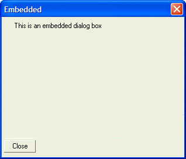

Lesson 17 Embedded Dialog Boxes
Xdialog allows you to embed one dialog inside another dialog box. This is a very powerful concept because it allows you to create extremely complex dialog boxes using a very modular approach. The Settings dialog in Alpha Five (accessed by selecting View > Settings from the menu) is an example of an Xdialog box that relies on embedded dialog boxes.
Explaining how embedded dialog boxes work is easiest by looking at a working example. Consider the following script:
ui_dlg_box("Embedded",<<%dlg% {startup=init} {embedded=60,15frame1}; {line=1,0}; %dlg%,<<%code% if a_dlg_button = "init" then ui_modeless_dlg_box("frame1",<<%dlg% This is an embedded dialog box; %dlg%,<<%code2% 1=1 %code2%) end if %code%) |
When this script is run, the following dialog box is displayed:

Lesson 17: Simple Embedded Dialog Box
Let's analyze how this script works.
Notice the command {embedded=60,15frame1}. This defines the area in which the embedded dialog box will display. An area 60 columns wide and 15 lines high is defined for the embedded dialog. This area is given an arbitrary label called "frame1". Any subsequent modeless dialog box that has a title of "frame1" will be displayed in the area defined for the embedded dialog.
Next, notice the command {startup=init}. The {startup=event} command is used to specify an event that should execute as soon as the dialog box is opened. In this case the startup event is called "init" and it executes the following code:
ui_modeless_dlg_box("frame1",<<%dlg% This is an embedded dialog box; %dlg%,<<%code2% 1=1 %code2%) |
The code displays a modeless dialog box with the title, "frame1". Because the dialog's title is "frame1" the dialog is displayed inside the parent dialog box. Notice that the event for this dialog box is a meaningless "1=1". as Discussed in the previous lesson, the event parameter is mandatory for a modeless dialog box. Since we do not have the need for a real event processor in this simple script, we just define a dummy event string that does not do much.
Notice that the embedded dialog box does not have any explicit code to close the modeless dialog box. That's because this modeless dialog box is used as an embedded dialog box and when the parent dialog box closes, the embedded dialog box also closes automatically.
The above example is not really that useful because it is so simple that you would be better off not using an embedded dialog box. However the following example is a much more practical example of how embedded dialog boxes can be used.
See Also